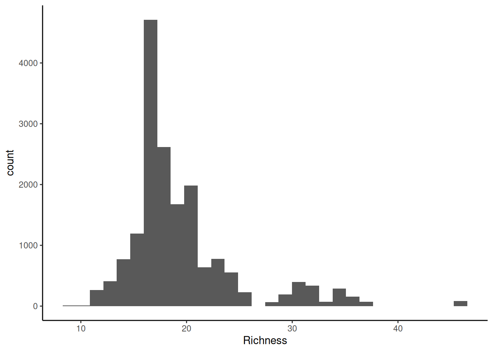
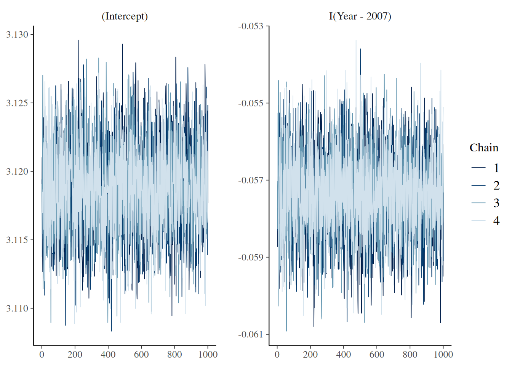
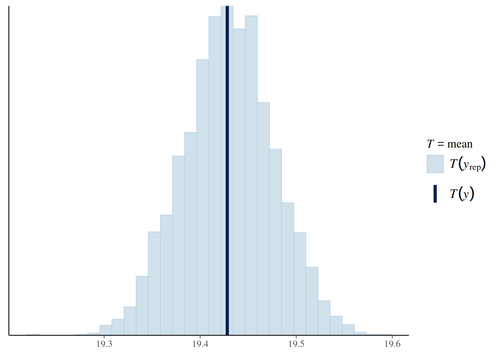
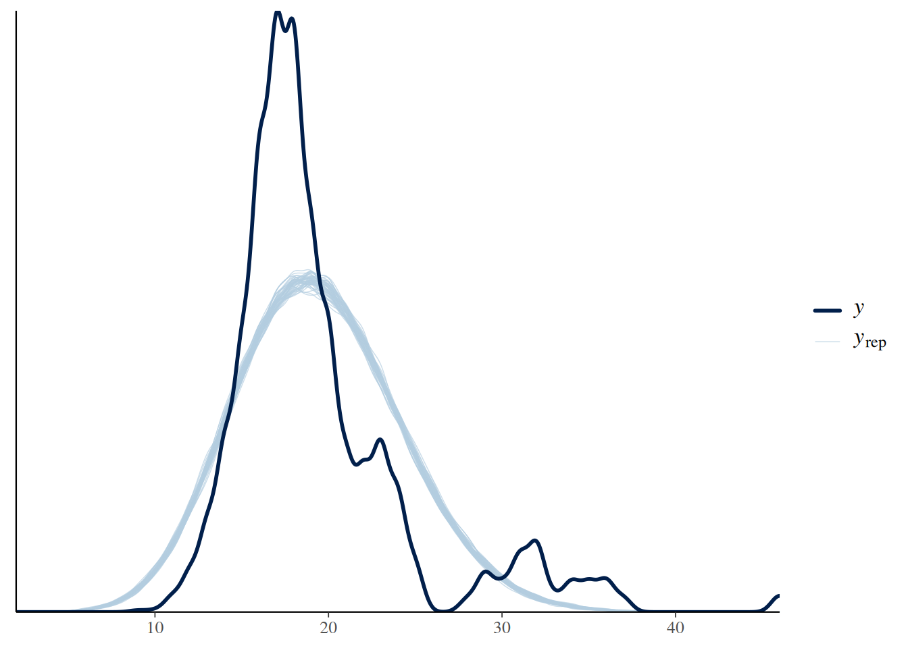
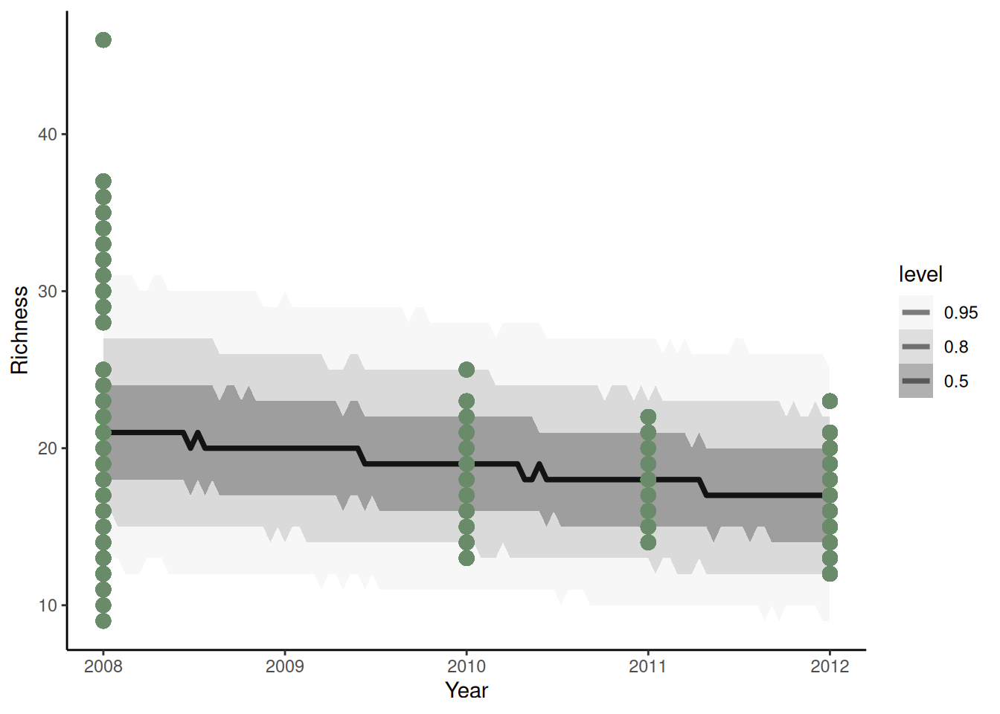
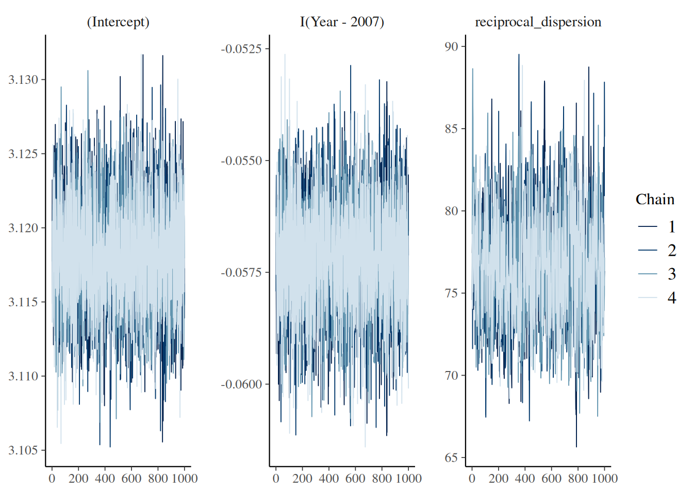
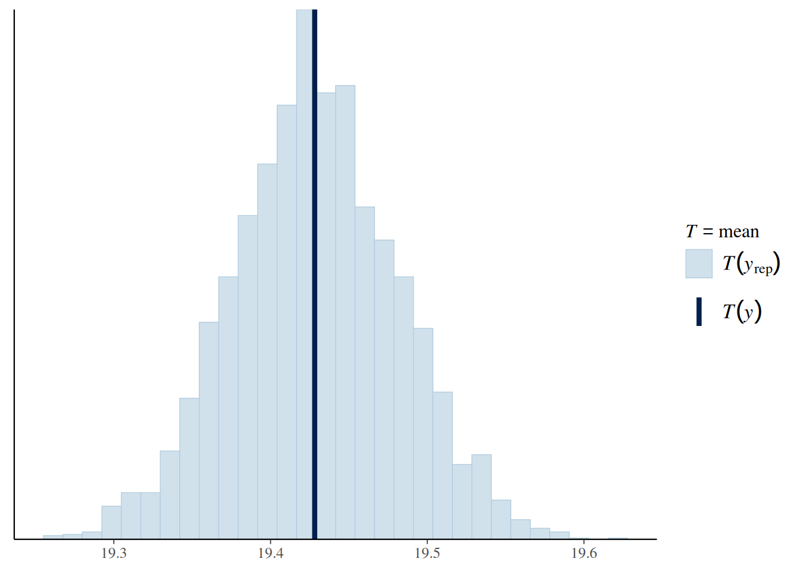
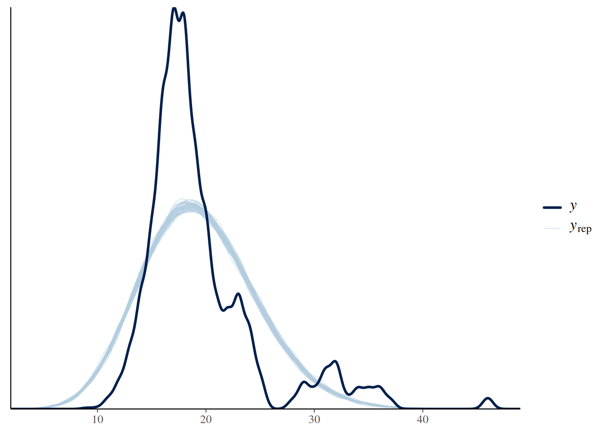
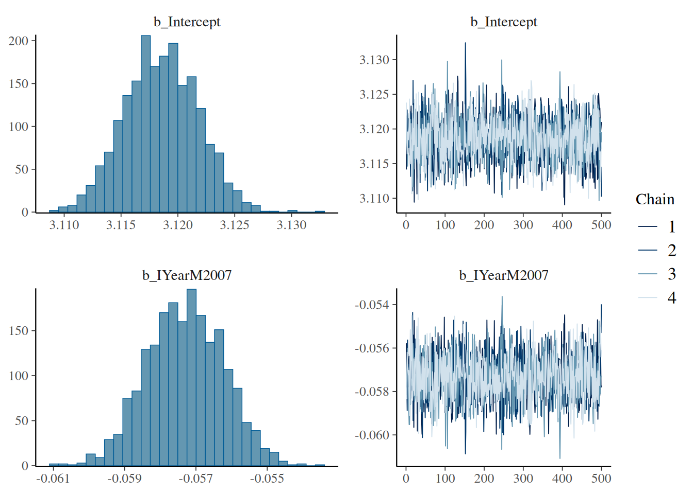

library(rio)
library(tidyverse)
library(rstanarm)
library(brms) # for models
library(bayesplot)
library(ggplot2)
library(dplyr)
library(tidybayes)
library(modelr)
# Custom function to get a sense of the data as a dataframe:
my_glimpse <- function(df, nn = 7) {
df <- df %>%
mutate(across(everything(), ~ if_else(is.character(.) & str_detect(., "^\\s*$"), NA, .)))
tibble::tibble(
Variable = names(df),
N_distinct = unname(purrr::map_int(df, dplyr::n_distinct)),
NAs = unname(purrr::map_int(df, ~ sum(is.na(.)))),
Types = unname(purrr::map_chr(df, ~ paste(class(.), collapse = ', '))),
Content = unname(purrr::map_chr(df, ~ {
vals_unique <- unique(.)
n_vals_unique <- length(vals_unique)
if (n_vals_unique == 0)
''
else if (n_vals_unique > nn)
paste(paste0(head(vals_unique, nn), collapse = ', '), ',...')
else
paste(vals_unique, collapse = ', ')
}))
)
}Generalised Linear Models in STAN follow along
1 Purpose
This is a follow-along document reporting my engagement with Coding Club’s Generalised linear models in Stan tutorial. Not everything in the tutorial is expected to be replicated here.
The following libraries are used in this tutorial:
2 Introduction
Finding answers to our research questions often requires statistical models. Designing models, choosing what variables to include, which data distribution to use are all worth thinking about carefully. In this tutorial, we will continue exploring different model structures in search of the best way to find the answers to our research questions. We will build on the Coding Club tutorials on how to design a model, and on Bayesian Modelling in MCMCglmm for key background information on model design and Bayesian statistics.
Statistical models can be fit in a variety of packages in R or other statistical languages. But sometimes the perfect model that you can design conceptually is very hard or impossible to implement in a package or programme that restricts the distributions and complexity that you can use. This is when you may want to move to a statistical programming language such as Stan. For an introduction to Stan, you can check out our intro tutorial here.
In this tutorial, we will learn about two packages, rstanarm and brms which allow us to fit Stan models using syntax similar to packages like lme4, nlme and MCMCglmm. We will use these packages to fit models that test how species richness has changed over time near Toolik Lake Field Station.
3 Use the rstanarm package to run a Poisson model
Research question: How has plant species richness changed over time at Toolik Lake?
Hypothesis: Plant species richness has increased over time at Toolik Lake.
# Load data
toolik_richness <- import('toolik_richness.csv') %>% as_tibble()
s_toolik_richness <- my_glimpse(toolik_richness)
s_toolik_richness# A tibble: 11 × 5
Variable N_distinct NAs Types Content
<chr> <int> <int> <chr> <chr>
1 V1 17493 0 integer 1, 2, 3, 4, 5, 6, 7 ,...
2 Year 4 0 integer 2012, 2011, 2010, 2008
3 Site 5 0 character MAT, 06MAT, DH, MNT, SAG
4 Treatment 19 0 character NFCT, NFNP, CT, NP, 06CT, 06F0.5, …
5 Block 9 0 character 1, 2, 3, 4, 6, 12, 13 ,...
6 Plot 8 0 integer 1, 2, 3, 4, 5, 6, 7 ,...
7 Species 115 0 character moss, lichen, litter, Bet nan, Car…
8 Relative.Cover 4337 41 numeric 0.016, 0.008, 0.048, 0.176, 0.288,…
9 Mean.Temp 4 0 numeric -9.45, -8.1, -8.566666667, -8.2833…
10 SD.Temp 4 0 numeric 16.82598099, 14.61051925, 15.37887…
11 Richness 28 0 integer 15, 14, 16, 13, 17, 12, 18 ,... liaison <- toolik_richnessSite and Species are strings (letters) and categorical data (factors) - they are names. Year, Cover, Mean.Temp and SD.Temp are numeric and continuous data - they are numbers. Cover shows the relative cover (out of 1) for different plant species, Mean.Temp is the mean annual temperature at Toolik Lake Station and SD.Temp is the standard deviation of the mean annual temperature. Then we have Treatment, another categorical variable that refers to different chemical treatments, e.g. some plots received extra nitrogen, others extra phosphorus. Finally, we have Block and Plot, which give more detailed information about where the measurements were taken.
The plot numbers are currently coded as numbers - 1, 2,…8 and they are a numerical variable. We should make them a categorical variable, since just like Site and Block, the numbers represent the different categories, not actual count data.
Note
Note from Edwin: In essence, what the tutorial is saying is that the following variables should be a factor: Site, Species, Treatment, Block, and Plot.
toolik_richness <- liaison
toolik_richness <- toolik_richness %>%
mutate(
Site = as.factor(Site),
Species = as.factor(Species),
Treatment = as.factor(Treatment),
Block = as.factor(Block),
Plot = as.factor(as.character(Plot))
)Now, let’s think about the distribution of the data, specifically our response variable, species richness (Richness).
p <- ggplot(toolik_richness, aes(x = Richness)) +
geom_histogram() +
theme_classic()
p`stat_bin()` using `bins = 30`. Pick better value with `binwidth`.

We are working with integers (similar to count data, species only come in whole numbers) and the data are right-skewed, that is because we have a few data points on the extreme right end, they are pulling the mean and median or our data to the right. For ecological data, this is quite common - across all of the sampling plots, we expect that they won’t all have lots of different species within them.
This means that a Poisson distribution might be suitable for our model.
One advantage to fitting models in Stan is that it’s easy to fully take advantage of your computing power. In Stan, we usually run two or more chains - different iterations of our model which we can then compare - if they are massively different, something is not right. If your computer has two or more cores, you can split the chains, i.e., run a chain on each core, saving you some time, as the code will then finish running quicker. This means that you’ll be running the code in parallel.
To enable parallel computing, you can run this line of code and then later on in the model code, you can specify how many cores you want to use.
options(mc.cores = parallel::detectCores())Now we are all set up for our first model. Remember that the data have a hierarchical structure - species richness is measured in plots, which fall within blocks that are then part of different sites. To derive inferences about changes species richness through time, our models should take this complexity of the data structure into account.
One disadvantage to Stan models is that the code can take a while to finish running, even if we use all of our computer cores, it can still be hours before you can see a summary of your model. Of course, one should use the most suitable type of model for a research question, regardless of how long the model takes to run (within reason…), but in our case, for teaching purposes and so that you can see some model outputs today, we will focus on species richness change within just one of the plots. In that case, the model does not need to include random effects, because on the plot level, there is no replication.
Just so that you know what the syntax looks like and if you have time to wait for this code to finish running, this is how the model for species richness change around Toolik Lake in general would look like:
# # Note - this code could take hours to run!
# # We are running the model using the default weakly informative priors.
# # More about priors coming later in the tutorial!
# stan_lm <- stan_glmer(
# Richness ~ I(Year-2007) + (1|Site/Block/Plot),
# data = toolik_richness,
# family = poisson,
# chains = 4,
# cores = 4
# )
#
# # Assess converge by looking at the trace plots
# plot(stan_lm, plotfun = "trace")
#
# # Explore the summary output
# summary(stan_lm)
Note
Note from Edwin: I did end up running the model. The longest chain ended up taking x minutes. I have saved the environment up to that point for further reference as long-model.RData.
Note
For teaching purposes only, we will proceed with a model without random effects - that way you can see the outputs of the models as you are going through the tutorial. Note that we do not advise doing this when you are analysing your data for real - of course a model that takes into account the hierarchical structure of the data would be better.
3.1 Advantages and disadvantages of using Stan
Stan models can take a long time to compile. One of their key advantage is that you have a lot of freedom to specify the priors (your prior knowledge and expectations of how a given parameter will behave) for your model parameters and you can really account for the complex structure your data might have. There is a time cost to this, as we’ve seen above. One way to approach this is to first make sure your code works on a small chunk of your data, and only afterwards, you can start running the code on the full data (and do other things while you wait for the models to compile).
Now we can run our simplified model. First, let’s check how many years of data we have:
unique(toolik_richness$Year)[1] 2012 2011 2010 2008There are four years of data from 2008 to 2012. For modelling purposes, it helps to transform the year variable into a continuous variable where the first year is year one, i.e., 2008 is 1, 2009 is 2. That way, the model won’t have to estimate richness in the year 500, the year 501, etc., it will start straight from our first monitoring year.
# Note how now we are using stan_glm because
# there are no random effects
stan_glm1 <- stan_glm(
Richness ~ I(Year-2007),
data = toolik_richness,
family = poisson,
chains = 4,
cores = 4,
seed = 123
)If you find this code still takes a long time, you can change the chains argument to only two chains, but note that it’s better to run models with more than two chains - then you have more room for comparison. If one or more of the four chains is behaving really differently from the rest, then the model might not have converged. What is model convergence? In brief, if a model hasn’t converged, you can’t trust the estimates it gives you. You can find more details in the model design tutorial here.
4 Assessing model convergence
One way to assess model convergence is by visually examining the trace plots. They should be fuzzy with no big gaps, breaks or gigantic spikes.
plot(stan_glm1, plotfun = "trace")

Here, the trace plots look fine.
Next we can look at the summary output.
summary(stan_glm1)
Model Info:
function: stan_glm
family: poisson [log]
formula: Richness ~ I(Year - 2007)
algorithm: sampling
sample: 4000 (posterior sample size)
priors: see help('prior_summary')
observations: 17493
predictors: 2
Estimates:
mean sd 10% 50% 90%
(Intercept) 3.1 0.0 3.1 3.1 3.1
I(Year - 2007) -0.1 0.0 -0.1 -0.1 -0.1
Fit Diagnostics:
mean sd 10% 50% 90%
mean_PPD 19.4 0.0 19.4 19.4 19.5
The mean_ppd is the sample average posterior predictive distribution of the outcome variable (for details see help('summary.stanreg')).
MCMC diagnostics
mcse Rhat n_eff
(Intercept) 0.0 1.0 2710
I(Year - 2007) 0.0 1.0 3451
mean_PPD 0.0 1.0 1930
log-posterior 0.0 1.0 1746
For each parameter, mcse is Monte Carlo standard error, n_eff is a crude measure of effective sample size, and Rhat is the potential scale reduction factor on split chains (at convergence Rhat=1).We can see that the effective sample size is alright (there is no hard cut threshold, but more than around 1000 is usually a good sign), another diagnostic metric, the Rhat value is also indicating convergence (an Rhat of 1 is a good sign, more than 1 could indicate trouble).
4.1 Posterior predictive checks
The pre-compiled models in rstanarm already include a y_rep variable (our model predictions) in the generated quantities block (your posterior distributions). We can use the pp_check function from the bayesplot package to see how the model predictions compare to the raw data, i.e., is the model behaving as we expect it to be?
pp_check(stan_glm1, plotfun = "stat", stat = "mean")Note: in most cases the default test statistic 'mean' is too weak to detect anything of interest.`stat_bin()` using `bins = 30`. Pick better value with `binwidth`.pp_check(stan_glm1, plotfun = "dens_overlay")


What do you think? How does the density distribution of the model predictions compare with that of the raw data?
From the histogram, we can see that the posterior mean (the dark blue line) aligns well with the raw data. From the density plot, we can see that the model is underpredicting the low species richness value. This is a common problem when working with left-skewed or zero/low number-inflated data. Overall though, the model predictions follow the underlying data, so in summary, we can say that this model fit is acceptable. Note that these decisions can vary based on your question, data and even your statistical philosophy.
4.2 Model diagnostics using shinystan
For an interactive exploration of Stan models, you can use the shinystan app. The app is compatible with Stan models generated using the rstan, rstanarm and brms packages, so regardless of how you chooose to run your Stan models, you can still use shinystan to assess whether or not they’ve converged and are behaving properly.
We can launch the app using the code below. That will open a window in our internet browser, where we can further explore our model.
if (FALSE) {
launch_shinystan(stan_glm1)
}Have a go at exploring the various options - you’ll probably spot some of the plots we’ve already made in R, but there are many others as well. Here, for example, if there were any divergent chains (i.e. a chain that is behaving in a very weird unexpected way), we would have seen red points. In our case, we don’t have any divergent chains.

Back to our research question:
How has species richness changed over those four years near Toolik lake?
To get the answer, we can plot the model predictions for our model as well as the raw data points.
set.seed(123)
model_fit <- toolik_richness %>%
data_grid(Year = seq_range(Year, n = 101)) %>%
add_predicted_draws(stan_glm1) %>%
ggplot(aes(x = Year)) +
stat_lineribbon(
aes(y = .prediction),
.width = c(.95, .80, .50),
alpha = 1/2, colour = "black"
) +
geom_point(
data = toolik_richness,
aes(y = Richness),
colour = "darkseagreen4", size = 3
) +
scale_fill_brewer(palette = "Greys") +
labs(
y = 'Richness'
)+
theme_classic()
model_fit

5 Priors
Packages like rstanarm and brms allow us to fit Stan models using simple and quick code syntax. One danger though is that along the way, we might forget to think about our priors! In the code above, we have not specified any priors. In that case, the model uses the default rstanarm priors.
We should check what those are whether they match our expectations of the data.
prior_summary(stan_glm1)Priors for model 'stan_glm1'
------
Intercept (after predictors centered)
~ normal(location = 0, scale = 2.5)
Coefficients
Specified prior:
~ normal(location = 0, scale = 2.5)
Adjusted prior:
~ normal(location = 0, scale = 1.6)
------
See help('prior_summary.stanreg') for more detailsBased on this output, the default prior for the Intercept (after predictors are centered) is normal(location = 0, scale = 2.5). For the other Coefficients, the specified prior is also normal(location = 0, scale = 2.5). You’ll also notice an “Adjusted prior” for the coefficients, which in this case is normal(location = 0, scale = 1.6). This adjustment occurs because rstanarm automatically centers and scales predictors by default (this helps with model convergence and makes default priors more broadly applicable). The scale of the prior is adjusted based on the standard deviation of the respective predictor.
These default priors (a scale of 2.5 for both intercept and coefficients before internal adjustments) might seem fairly informative at first glance. However, it’s important to remember that rstanarm centers predictors around their means and typically scales them. When predictors are centered, the intercept represents the expected outcome when all predictors are at their mean values. A prior scale of 2.5 on this intercept and on the scaled coefficients can often be considered weakly informative, which may be suitable for many research questions, including analyzing plant species richness data, depending on the scale of the outcome variable and predictors. It’s always good practice to consider if these defaults are appropriate for your specific problem.
If you would like to change the priors, you can add arguments within the stan_glm() function. For example: prior = normal(0, 1) (to set the prior for all coefficients) prior_intercept = normal(0, 5) (to set a specific prior for the intercept)
Always consult the rstanarm documentation for the most up-to-date information on priors and their specification.
Caution
Note from Edwin: Since the tutorial was published, it seems that the default priors have changed. Therefore, the above explanatory paragraphs were generated with the help of Gemini 2.5 Pro. This means, the information does not come directly from the people behind Our Coding Club. The information should be carefully examined before being used in further projects.
6 Extract Stan code from an rstanarm model
When using packages like rstanarm and brms which you will see in a bit, it’s a good idea to actually look at the Stan code behind the model.
You can extract the code with the following function:
stancode <- rstan::get_stancode(stan_glm1$stanfit)
cat(stancode)You’ll see a lot of code appear in the console - this is what rstanarm has “written” for you. Amidst the many letters, you can see that the overall structure is like the Stan models we wrote in our intro Stan tutorial - first, we state the parameters for the data, the data gets transformed (scaled and centered), then we define our model and finally, we calculate the predictions in the generated quantities block.
7 Explore a model using a negative binomial distribution
Up until now, we’ve been using a Poisson distribution for our models, which is suitable for when we are working with discrete count data. The Poisson distribution assumes that the mean and variance are the same. In ecology and probably other disciplines too, the data might have variance greater than the mean. In this case, we call the data overdispered. The negative binomial distribution adjusts the variance independently from the mean and as such is more flexible than Poisson. The Poisson distribution is actually a type of a negative binomial distribution.
In rstanarm, it’s easy to update a model using a different data distribution. In our case, we can try a negative binomial distribution.
stan_glm2 <- update(stan_glm1, family = neg_binomial_2)# Check convergence & priors
plot(stan_glm2, plotfun = "trace")
# Posterior Predictive Checks
pp_check(stan_glm2, plotfun = "stat", stat = "mean")Note: in most cases the default test statistic 'mean' is too weak to detect anything of interest.`stat_bin()` using `bins = 30`. Pick better value with `binwidth`.pp_check(stan_glm2, plotfun = "dens_overlay")



summary(stan_glm2)
Model Info:
function: stan_glm
family: neg_binomial_2 [log]
formula: Richness ~ I(Year - 2007)
algorithm: sampling
sample: 4000 (posterior sample size)
priors: see help('prior_summary')
observations: 17493
predictors: 2
Estimates:
mean sd 10% 50% 90%
(Intercept) 3.1 0.0 3.1 3.1 3.1
I(Year - 2007) -0.1 0.0 -0.1 -0.1 -0.1
reciprocal_dispersion 76.6 3.3 72.5 76.5 80.9
Fit Diagnostics:
mean sd 10% 50% 90%
mean_PPD 19.4 0.1 19.4 19.4 19.5
The mean_ppd is the sample average posterior predictive distribution of the outcome variable (for details see help('summary.stanreg')).
MCMC diagnostics
mcse Rhat n_eff
(Intercept) 0.0 1.0 4340
I(Year - 2007) 0.0 1.0 4890
reciprocal_dispersion 0.1 1.0 1193
mean_PPD 0.0 1.0 2897
log-posterior 0.0 1.0 1162
For each parameter, mcse is Monte Carlo standard error, n_eff is a crude measure of effective sample size, and Rhat is the potential scale reduction factor on split chains (at convergence Rhat=1).prior_summary(stan_glm2)Priors for model 'stan_glm2'
------
Intercept (after predictors centered)
~ normal(location = 0, scale = 2.5)
Coefficients
Specified prior:
~ normal(location = 0, scale = 2.5)
Adjusted prior:
~ normal(location = 0, scale = 1.6)
Auxiliary (reciprocal_dispersion)
~ exponential(rate = 1)
------
See help('prior_summary.stanreg') for more detailsYou can see that the model outputs are very similar - this is to be expected, because the Poisson distribution is actually a type of a negative binomial distribution. Once again, the model is underpredicting the frequency of low species richness values.
8 Run a Stan model using the brms package
brms is another package that serves a similar purpose to rstanarm - it allows you to run Stan models using simple code syntax. brms writes all Stan models from scratch and has to compile them, while rstanarm comes with precompiled code (so when we were running our rstanarm models earlier, you didn’t see any messages about C++ compiling, since that was already done in advance).
The results of the models ran using the different packages should not be different any more than is to be expected by chance (every time you re-run a model using Bayesian inference, the results will be a tiny bit different, because of how the posterior sampling is done, but those differences are of very small magnitudes, like between 0.19887 and 0.19884).
One advantage of brms is that the Stan code you can extract from it is much easier to read than the Stan code coming from rstanarm. We can fit a brms model to check it out.
stan_glm_brms <- brm(
brms::bf(Richness ~ I(Year-2007), family = brmsfamily('poisson')),
data = toolik_richness,
iter = 1000,
chains = 4,
seed = 123
)Compiling Stan program...Trying to compile a simple C fileStart samplingsummary(stan_glm_brms) Family: poisson
Links: mu = log
Formula: Richness ~ I(Year - 2007)
Data: toolik_richness (Number of observations: 17493)
Draws: 4 chains, each with iter = 1000; warmup = 500; thin = 1;
total post-warmup draws = 2000
Regression Coefficients:
Estimate Est.Error l-95% CI u-95% CI Rhat Bulk_ESS Tail_ESS
Intercept 3.12 0.00 3.11 3.12 1.00 1677 1442
IYearM2007 -0.06 0.00 -0.06 -0.06 1.00 1997 1248
Draws were sampled using sampling(NUTS). For each parameter, Bulk_ESS
and Tail_ESS are effective sample size measures, and Rhat is the potential
scale reduction factor on split chains (at convergence, Rhat = 1).plot(stan_glm_brms)
# Extract Stan code
# The code is nicely annotated, so you can read through
stancode(stan_glm_brms)// generated with brms 2.22.0
functions {
}
data {
int<lower=1> N; // total number of observations
array[N] int Y; // response variable
int<lower=1> K; // number of population-level effects
matrix[N, K] X; // population-level design matrix
int<lower=1> Kc; // number of population-level effects after centering
int prior_only; // should the likelihood be ignored?
}
transformed data {
matrix[N, Kc] Xc; // centered version of X without an intercept
vector[Kc] means_X; // column means of X before centering
for (i in 2:K) {
means_X[i - 1] = mean(X[, i]);
Xc[, i - 1] = X[, i] - means_X[i - 1];
}
}
parameters {
vector[Kc] b; // regression coefficients
real Intercept; // temporary intercept for centered predictors
}
transformed parameters {
real lprior = 0; // prior contributions to the log posterior
lprior += student_t_lpdf(Intercept | 3, 2.9, 2.5);
}
model {
// likelihood including constants
if (!prior_only) {
target += poisson_log_glm_lpmf(Y | Xc, Intercept, b);
}
// priors including constants
target += lprior;
}
generated quantities {
// actual population-level intercept
real b_Intercept = Intercept - dot_product(means_X, b);
}

9 Conclusion
In this tutorial we learned to fit Stan models in R using the rstanarm and brms packages which write the Stan code for us, so they can be seen as a gentler introduction to Stan. We looked at two different data distributions that are suitable for left-skewed discrete count data - Poisson and negative binomial. If you are keen to get back into Stan coding, we’ve showed how to extract the Stan code behind the rstanarm and brms models, so you can take that code and develop it further. You can check out our other Stan tutorial. to see how to write and run Stan code using the rstan package.